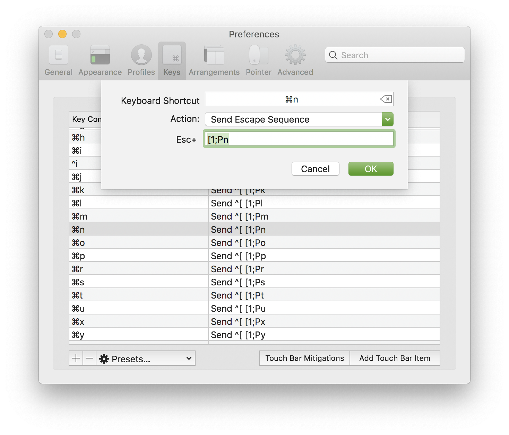

Use Command bindings in Iterm for Emacs
If you use mac, normally you can’t use command keys in Emacs inside a terminal as in GUI. This Emacs Wiki page gives a tutorial on how to use your own escape sequence in iTerm and translate them into bindings in Emacs. The only problem is that you have to manually set each escape sequence in iTerm. So I never bothered. Now with the fresh 3.3.5 beta version, you can import and export key mappings in iTerm. Here is how I did it.
First we want to see what does the format looks like. I manually set a few bindings and exported it:
"0x61-0x40000":{"Text":"C-a", "Action":11},
"0x61-0x100000":{"Text":"s-a", "Action":10},
"0x62-0x100000":{"Text":"s-b", "Action":10},
"0x7a-0x100000":{"Text":"s-z", "Action":10},
Seems that 0x61 to 0x7A represents a to z, and 0x100000 represents the command key. Now let’s generate an entry like that. I used the same sequence as in the Wiki page: [1;Pxxx, I just replaced the number with the letters since that’s clearer.
(format "\"0x%X-0x100000\":{\"Text\":\"[1;P%c\", \"Action\":10}," #x61 ?a) ;;=> "\"0x61-0x100000\":{\"Text\":\"[1;Pa\", \"Action\":10},"
Looks good, now it’s time to generate all of them
(require 'cl-lib) (message (string-join (cl-loop for hex from #x61 to #x7a for char from ?a to ?z collect (format "\"0x%X-0x100000\":{\"Text\":\"[1;P%c\", \"Action\":10}" hex char)) ",\n"))
Send them to message buffer and copy & paste is a lazy yet effective approach. Now we create a new file, name it import.itermkeymap and put our configs in.
{"Key Mappings":{
"0x61-0x100000":{"Text":"[1;Pa", "Action":10},
"0x62-0x100000":{"Text":"[1;Pb", "Action":10},
"0x63-0x100000":{"Text":"[1;Pc", "Action":10},
"0x64-0x100000":{"Text":"[1;Pd", "Action":10},
"0x65-0x100000":{"Text":"[1;Pe", "Action":10},
"0x66-0x100000":{"Text":"[1;Pf", "Action":10},
"0x67-0x100000":{"Text":"[1;Pg", "Action":10},
"0x68-0x100000":{"Text":"[1;Ph", "Action":10},
"0x69-0x100000":{"Text":"[1;Pi", "Action":10},
"0x6A-0x100000":{"Text":"[1;Pj", "Action":10},
"0x6B-0x100000":{"Text":"[1;Pk", "Action":10},
"0x6C-0x100000":{"Text":"[1;Pl", "Action":10},
"0x6D-0x100000":{"Text":"[1;Pm", "Action":10},
"0x6E-0x100000":{"Text":"[1;Pn", "Action":10},
"0x6F-0x100000":{"Text":"[1;Po", "Action":10},
"0x70-0x100000":{"Text":"[1;Pp", "Action":10},
"0x71-0x100000":{"Text":"[1;Pq", "Action":10},
"0x72-0x100000":{"Text":"[1;Pr", "Action":10},
"0x73-0x100000":{"Text":"[1;Ps", "Action":10},
"0x74-0x100000":{"Text":"[1;Pt", "Action":10},
"0x75-0x100000":{"Text":"[1;Pu", "Action":10},
"0x76-0x100000":{"Text":"[1;Pv", "Action":10},
"0x77-0x100000":{"Text":"[1;Pw", "Action":10},
"0x78-0x100000":{"Text":"[1;Px", "Action":10},
"0x79-0x100000":{"Text":"[1;Py", "Action":10},
"0x7A-0x100000":{"Text":"[1;Pz", "Action":10}
}}
If you import this in iTerm you can see indeed all the escape sequences are set. Some tips:
- I took
⌘-q,⌘-w,⌘-c, and⌘-vout. - The configuration file can’t contain comments.
- iTerm has two places to set keys, one simply under “Keys” tab, the other under “Profiles” → “Keys” tab.
- Some command bindings doesn’t work even you import the key configurations. For example, typing
⌘-nstill opens a new window. To fix that, you need to re-enter the key sequence manually. Double-click on the binding’s entry, click on “Keyboard Shortcut”, and re-type your binding.

Figure 1: Re-enter the key sequence
Now we only need to tell emacs to translate those escape sequences to bindings.
(cl-loop for char from ?a to ?z do (define-key input-decode-map (format "\e[1;P%c" char) (kbd (format "s-%c" char))))